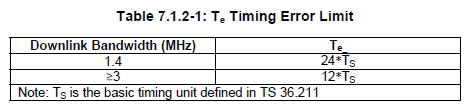
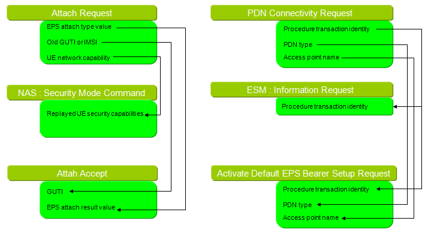
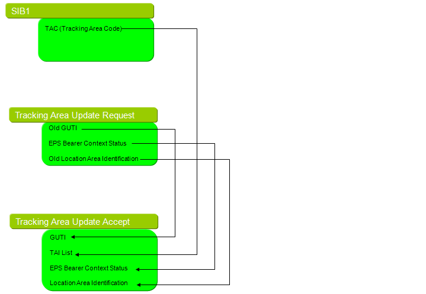

Troubleshoot Tips Home : www.sharetechnote.com
Even though you have the whole knowledge of this technology, it is impossible to implement a protocol stack or test cases which does not need any troubleshooting. In reality, most of the engineers has relatively good knolwedge on a specific area or specific layer but much less knowledge on other layers. However when a problem happens, we usually have to analyze across multiple layers meaning that we need knowledge on several layers and detailed interrelations between those layers.
In a word, there is no way to troubleshoot in a single shot and no short cut for it. A third of them came from the knowledge and a third of them came from experience and the other third came from the combination of these two.
In this section, I would try putting down some troubleshooting tips mostly based on my experience. Following is the list of the tips and this list would get longer as time goes on.
- Tools for troubleshoot
- The most important initial 5 steps
- UE does not even try to search any cell
- "No Service" on Power On
- All the SIBs are decoded but UE does not initiate RACH process.
- Not All SIBs are decoded
- Network detected but no further progress
- UE keep sending PRACH
- UE log says "It sent Msg3", but Network log says "It hasn't received it"
- UE sent Message3 and Network sent Message4, but UE does not send Message5
- Network(Network simulator) sent some data but HARQ ACK/NACK does not received
- EMM : Security Mode Reject with the cause of #23:UE security capabilities mismatch
- RRC Connection Reconfiguration Complete doesn't get received on network side
- EMM Detach Request right after EPS Bearer Setup or No Attach Accept/No Activate Default EPS Bearer Accept
- CRC Error
- SR (Scheduling Request) Not Working
- MIMO Related Issue
- CSFB Related Issue
- Measurement Control/Measurement Report related Issue
- Some UE specific Issues
- Message Correlation Issues
The more tools you have, generally the easier to troubleshoot. I hope I can get at least the followings tools as minimum (in many case even this minimum are not meet giving me more headache though)
i) Logging tools on network emulator (It should have not only signaling log (L3 and above) but also all the lower layer log as well)
ii) Logging tools on UE (In this case as well we need not only signaling log but also all the lower layer log)
iii) RF Vector Sepctrum Analyzer (This should have good qulaity of zero-span with triggering capability. It would help a lot at RACH process or handover process troubleshooting).
Among this tools, I want to put a special emphasis on logging tools. Of course the best logging tool would the one which can show the process for all the layers. It should show not only for scheduling information but also for the payload for each layer. Especially it is very important to the logging tools that can show PDSCH and PUSCH payload and SFN:Subframe. But in reality many of the logging tools suppress PDSCH/PUSCH data since collecting all of these can be too much load for processor. However, PDSCH/PUSCH is more important than any other layers mainly for the following reason.
i) PUSCH/PDSCH payload can show the data and header for all other layers like MAC, RLC, PDCP headers.
ii) PUSCH/PDSCH transmission timing (SFN:Subframe) is idential on both UE and Network. You can easily synchronize UE log and Network log.
The most important initial 5 steps
The most important 5 steps for registration are as follows :
We have to know every details of these process and all the factors influencing this process.
i) RACH Preamble
ii) RACH Response (Msg 2)
iii) RRC Connection Request (Msg 3)
iv) RRC Connection Setup
v) RRC Connection Setup Complete
First thing we have to consider is timing requirement between each step and the following step. Time Interval between i) and ii) is 0~12 sub frames. The requirement between ii) and iii) is 6 sub frames. The network should complete the lower layer configuration for Msg3 reception at least 4 sub frames before the msg3 comes into the network.
UE does not even try to search any cell
If the UE is equipped with full protocol stack
i) Check if the UE has proper USIM in it. (Sometimes UE requires a special USIM even for testing. In many case, System Operators ask UE vendor to 'lock' the SIM only for the System Operator's SIB. In this case, the UE would not try anything when you put into test USIM).
When you turn on the UE connected to the network simulator, you will see "Searching Network... " message for several seconds and you will be sweating a lot for this period if you are protocol stack developer or test case developer.
If it goes to next step and UE start registration, you will be happy and the problem happens when it stop searching and "No Service" message pops up.
First step would be to read section 5.1, 5.2 of 36.331 and get the clear understanding of what is the expected procedure on UE and Network side.
If I have the UE logging tool, I would first check it to see if the UE correctly decoded MIB, SIB1, SIB2 at least. When the UE side log is not available or UE log shows that any one of these are not recieved, we have to see the network side log or protocol stack source code if it is available. In most case you would see that MIB, SIB1, SIB2 is not missing. Then why UE fails to decode them ?
Two possibilities that I can think of
i) The scheduling information on SIB1 for other SIBs so that multiple SIBs overwrite each other.
ii) There is no problem in the scheduling, but UE has some issues with being tuned for the specific schedule. (This kind of situation would not happen when the technology is mature but possible at the initial phase of technology like LTE and I have experienced this situation).
If you have a tool to monitor UE side log, I would recommend you to check.
i) Check if UE decode all the SIBs properly. In LTE case, MIB, SIB1, SIB2 should be mandatory. So you have to make it sure that your device successfully decoded these SIBs.
ii) Examine the SIB scheduling information in SIB1. SIB1 carries the scheduling information for other SIBs.. so your device should decode all the SIBs scheduled by SIB1. If UE failed to decode any one of these SIB, UE would keep waiting for the missing SIB without trying any other things (e.g, initiating RACH process). This be behavior would vary depending on NAS layer implementation on each UE. (I have experienced different behaviour from different protocol stack implementation. In one implementation, I saw a UE never camp on the network unless it decodes all the SIBs specified in SIB1 and I also another UE camp on the network once it successfully decoded SIB1 and 2 even though it didn't decode other SIBs configured in SIB1).
All the SIBs are decoded but UE does not initiate RACH process.
The highest possibility would be that the Band Indicator in SIB1 would not match what UE is configured for. Most of UE (especially a commercialized UE) is configured only for one or a couple of specific bands. Many of UE NAS does not trigger RACH process if the band indicator on SIB1 does not match what it is configured for. .. but the UE behavior in this case would vary a little bit depending on it's NAS implementation.
Let's suppose that you have UE side logging tool and captured SIB reception part. You would almost always see SIB1 decoded (If SIB1 is not decoded, you may failed even at frequency search phase. In this case, you have to check if UE properly decoded Physical Cell ID properly.)
Let's assume that you have SIB1 decoded (In UMTS case, let's assume you have MIB decoded).
In this case, the first thing you have to do is to check SIB scheduling portion contained in SIB1 (or MIB in UMTS) and check all the SIBs listed in the SIB scheduling part is properly decoded.
What if Not all SIBs are decoded ? Some of the SIBs are missing.
In this case, you have to think about following things.
i) Did UE fail to decode the missing SIBs ? (i.e, UE tried to decoded it but couldn't decode it)
ii) Did UE chose not to decode the missing SIBs ? (i.e, UE could have decoded it, but didn't decode it)
One of the most common cause of case i) would be that wrong SIB scheduling and multiple SIBs are overwriting each other. You have to check the schedule again and make sure that there are no SIBs overwriting others.
Common causes of case ii) would be
a) The frequency specified in the band indicator in SIB1 does not match with the band that UE detected.
b) The SIBs from the cell ID and PLMN (in SIB1) has already decoded. (If you configured the two cells with same cell ID and PLMN, definitely by mistake, the SIBs (except SIB1) for the second cell may not be decoded because UE think it has already decoded all the SIBs when it camp on the first cell.
Network detected but no further progress
"No Service" message shown on UE screen but no registration process starts. The first item you have to check at this stage is to check whether UE sent RACH or not. How do we verify this ?
i) Check UE log if the log says "RACH" get transmitted
ii) Check Network emulator log if it received "PRACH" signal (You need to have Network emulator which has very detailed logging capability to show this).
iii) Use spectrum analyzer to detect PRACH from UE (Since the signal analyzer does not know exactly the PRACH signal comes in and the PRACH is a burst type of signal, put the spectrum analyzer in zero-span mode and set the proper trigger for it).
In normal case, if UE send PRACH and network send RACH Response and UE is supposed to stop sending PRACH and initiate RRC Session by sending 'RRC Connection Request'. If UE keep sending PRACH, it means there is some issues with processing 'RACH Response' process.
i) Check Network emulator log if it received "PRACH" signal (You need to have Network emulator which has very detailed logging capability to show this).
ii) Check Network emulator log if it sent RA Response.
iii) Check Network emulator log if the timing requirement between PRACH reception and RA Response has been satisfied. (Even though network sents the RA Reponse, UE keep trying RACH process if network sent it too late).
iv) Check UE log if the log says "RACH Response" recieved
v) Check UE log if the PRACH transmission and RA Response has been done within the timing requirement.
Unfortunately in this case it is hard to use a spectrum analyzer because downlink signal has so many trains of other signals to make it hard to set the trigger on the spectrum analyzer side to detect the RACH response unless the spectrum analyzer has specific decoding capability so that it can use RACH response itself as a trigger.
Another possibility would be the following case,
i) UE transmit PRACH Preamble
ii) Network sent RACH Response
iii) UE properly decode RACH response
iv) UE sent 'RRC Connection Request'
v) Network failed to decode 'RRC Connection Request' and does not send 'RRC Connection Setup'
vi) (Timeout for 'RRC Connection Setup') UE reinitiate PRACH process
If you see the network side log, you would not see 'RRC Connection Request' even though UE log says it sent the message.
The most common cause for this situation would be related to step iii) and iv). If you read the 'Understand RACH !' section, you would remember that RACH Response message carries 'UL Grant' which basically carries the resource allocation for 'RRC Connection Request' message. If UE uncorrectly decoded 'RA response' message, it will send 'RRC Connection Request' message in the wrong locations and network would fail to decode it even though UE sent the message. Another possibility can on network side. If network sent wrong RACH Response message (wrong UL Grant) which is different from it's MAC Layer setting setting for UL CCCH, it would fail to decode it. This kind of problem would happen pretty often when you create test case for UE testing. If you have a working test scenario on a certain system bandwidth and then just changed the System Bandwidth and all of the sudden RACH process fails.. in this case the first place you have to check would be UL Grant field of RA Response message.
UE log says "It sent Msg3", but Network log says "It hasn't received it".
For the troubleshoot at this step, we need to know all the details regarding this step.
i)UE send PRACH
ii) Network send RACH Response (RAR) which carries Resource Allocation for Msg3
iii) UE send Msg3 from RRC after 6 or 7 subframe after it get RAR
iv) UE transmit PUSCH containing Msg3 from UE PHY using the resource allocation on RAR
v) Network tries to decode Msg3 from the resource allocation specified by RAR
As you may guess from the steps listed above, it will be very difficult to roubleshoot unless you have very detailed logging tool on both side (UE and Network side)
If you can answer all of the following questions you would almost automatically figure out what is the problem.
a) Is the resource allocation from RAR the same as resource allocation for PUSCH transmission ? (You have to compare RAR from Network log and what UE decoded from RAR)
b) Does UE transmit Msg3 at right timing ? (You have to check the SFN:Subframe number when UE transmit PUSCH carrying Msg3).
c) Is Network trying to decode Msg3 at proper resource allocation ? (It may be possible that Network allocated a specific location in RAR but I tried to decode the message at different location. In this case, it is Network or Network emulator's bug. But I think this would be very rare case and in this case all the UE will fail at this step).
Most of trace log will give you the answer to question a),b),c). But the answer to all of the question does not have any problem, the situation gets tricky and you may need some additional equipment for troubleshoot. If you have really detailed logging tool on Network side, you may check the following.
d) Does Network (Network Emulator) properly decode DMRS for PUSCH ?
If the answer is Yes, you have to further details of PUSCH configuration parameters which may require L1 base band engineers on both side.
If the answer is No, there is another possibility. The possibility would be that UE sent PUSCH but the transmission timing (in the unit of baseband samples, not in the unit of subframe) does not exactly align with subframe timing on Network side. The allowable timing offset is specified in "7.1.2 Requirements" on TS36.133 (See the following table).

UE sent Message3 and Network sent Message4, but UE does not send Message5
There can be many cause for this, but one of the most common cause especially during the early protocol stack development would be the mistmatch between UE id in message 3 and and message 4. It means there is problems with contention resolution.
For a reference, let us see an successful case for message 3 and message 4.
UE -> Network (Message 3): 20 06 1F 53 01 E0 E6 D3 D6
Network -> UE (Message 4): 3C 20 11 1F 53 01 E0 E6 D3 D6 60 12 9B 3E 86 0F B5 79 68 96 6C 30 64 99 C0 58 F0
The data in blue is MAC header. The red part is the message 3 contents. The green part is the message 4 RRC/NAS layer contents.
Actually RRC part of the whole message 3 becomes an UE ID for the contetional resolution. If you see the hex string above, you will see the red part in message 3 matches with the red part in message 4. If these two red part does not match, UE does not send Message 5.
Simply put, this is Contention Resolution Failure.
Network(Network simulator) sent some data but HARQ ACK/NACK does not received
This kind of troubleshooting is extremely difficult mainly because of the capability of the logging tools and the amount of data you have to analyze. From what I experienced, most of logging tool especially UE side logging tools does not capture this level of log and sometime they have such a logging capability but disables it when they test full protocol stack. I understand the reason behind it. If you enable all of the logging at this level, the amount of log will become huge or the log collection itself would consume a lot of processing power and in worst case the logging process would cause problem in normal protocol stack operation.
Anyway I would comments on this based on the assumption that you have a very detailed logging tool both on UE side and Network side.
One of the basic methodoloty of troubleshooting is just to follow each and every steps of normal process and check all of the steps.
Too simple ? Yes.. it is very simple.. but I see many cases where even these simple procedure is ignored and the troubleshooting process is purely going with blind repetition of hit-and-miss.
OK.. then let's think about a normal data transmission with ACK/NACK. It is as follows :
i) Network High Layer ( RRC or TE) -> Lower Layer : Transmit the data toward the lower layer.
ii) Network -> UE : Transmit the data via PDSCH
iii) UE receive PDSCH data
iv) UE checks CRC error for the PDSCH data
v) Now we have two cases at this point,
a) If UE has some data to transmit to the network, UE send the result of CRC check(ACK/NACK) via PUSCH
b) If UE does not have any data to transmit to the network, UE sends the result CRC check via PUCCH
vi) Network receives CRC check result from UE and do one of the following steps.
a) If it receives ACK, Network transmit the next data (new data)
b) If it receives NACK, Network HARQ process retransmit the exisiting data (with different revision)
For somebody who does not like to read, here goes illustrated version of the process -:).

As I said above, the first step is to go through UE and Network side log to make it sure each of the steps has been done properly. if you have a proper logging tool, you will troubleshoot relatively easily upto step v). But you will come across a tricky situation, if something happens between step v) and vi).
Let me give you an example of this tricky situation. Let's assume that UE sent ACK/NACK via PUCCH, but network didn't get it. In this case, the first thing you have to check is all the parameter settings configuring PUCCH. PUCCH related parameters are distributed across multiple places. SIB2 and RRC Connection Setup is the most important check point. In SIB2, you will find the following parameters which is related to PUCCH reception itself.
| | +-pucch-Config ::= SEQUENCE
| | | +-deltaPUCCH-Shift ::= ENUMERATED [ds2]
| | | +-nRB-CQI ::= INTEGER (0..98) [2]
| | | +-nCS-AN ::= INTEGER (0..7) [6]
| | | +-n1PUCCH-AN ::= INTEGER (0..2047) [0]
In RRC Connection Setup, you will find the following information elements related to ACK/NACK transmission from UE
| +-pucch-ConfigDedicated ::= SEQUENCE [0] OPTIONAL:Exist
| | +-ackNackRepetition ::= CHOICE [release]
| | | +-release ::= NULL
| | +-tdd-AckNackFeedbackMode ::= ENUMERATED OPTIONAL:Omit
First you have to check if UE configured itself as specified in these radio message (SIB2, RRC Connection Setup). If UE configured all of these prameters correctly, the next step you have to do is to check on network side if network configured PUCCH decoding process as indicated on these radio message. If you find any single mismatches among those check points, Network would not be able to decode ACK/NACK even though UE transmitted it.
RRC Connection Reconfiguration Complete doesn't get received on network side
'RRC Connection Reconfiguration' is similar to 'Radio Bearer Setup' message in WCDMA, 'RRC Connection Reconfiguration Complete' message is similar to 'Radio Bearer Setup Complete'. In WCDMA case, if there is some settings in Radio Bearer Setup which is in wrong format or cannot be supported by UE, UE send 'Radio Bearer Setup Failure' message. But in LTE RRC Connection Reconfiguration, UE just does not send anything if there is some problem in the message and this makes troubleshooting very difficult. For example, when you are writing a test case and you don't get 'RRC Connection Reconfiguration Complete' message, there are multiple possible causes as follows :
i) UE failed to receive 'RRC Connection Reconfiguration'
ii) UE received 'RRC Connection Reconfiguration', but there was some information element that cannot be setup by UE
iii) UE received 'RRC Connection Reconfiguration' and transmitted 'RRC Connection Reconfiguration Complete' but Network failed to receive it. (It didn't even detected in Network PHY layer. or It detected by network PHY layer but CRC error happened).
If you come across case iii), the first thing you would check is 'TransmissionMode'. For example, if UE is connected in only one Antenna but 'RRC Connection Reconfiguration' TransmissionMode setting is multiple Antenna configuration, like TM2, TM3 etc.
The trickest one is case ii). In this case, you have to go through every IE(information elements) in the message and check if all those elements comply to UE capability.
EMM : Security Mode Reject with the cause of #23:UE security capabilities mismatch
I saw this problem with some UEs while I was creating a network simulator program to test UE. With the same program, some UE had this problem but other UE did not. But I think the behavior of UEs that generating this Reject message is correct, meaning my network simulator program had a problem -:).
The issue was that UE send EMM : Security Mode Reject message with the cause of 23 as follows in response to EMM : Security Mode Command.
NAS_LTE:EMM,Security mode reject
Security mode reject ::= DIVISION
+-Security header type ::= V
| +-Security header type ::= CHOICE [Plain NAS message, not security protected]
+-EPS mobility management protocol discriminator ::= V
| +-Protocol discriminator ::= PD [7]
+-Security mode reject message identity ::= V
| +-Message type ::= MSG [5F]
+-EMM cause ::= V
+-Cause value ::= CHOICE [#23:UE security capabilities mismatch]
The EMM:Security Mode Command should carry the UE capability that was reported by UE via Attach Request message. More specifically, the part that caused problem is the one marked in red as follows.
[NAS_LTE:EMM,Security protected NAS message
Security protected NAS message ::= DIVISION
+-Security header type ::= V
| +-Security header type ::= CHOICE [Integrity protected with new EPS security context]
+-EPS mobility management protocol discriminator ::= V
| +-Protocol discriminator ::= PD [7]
+-Message authentication code ::= V
| +-Message authentication code ::= OCTETARRAY SIZE(4..4) [00000000]
+-Sequence number ::= V
| +-Sequence number ::= INT (0..255) [0]
+-NAS message ::= V
+-Octet1- ::= DIVISION
+-NAS message ::= OCTETARRAY SIZE(0..65535) [075D000002E0E0]
The EMM:Security Mode Command is supposed to specify the UE security capability which is reported to network by Attach Request as shown below.
NAS_LTE:EMM,Attach request
Attach request ::= DIVISION
+-Security header type ::= V
| +-Security header type ::= CHOICE [Plain NAS message, not security protected]
+-EPS mobility management protocol discriminator ::= V
| +-Protocol discriminator ::= PD [7]
+-Attach request message identity ::= V
| +-Message type ::= MSG [41]
+-NAS key set identifier ::= V
| +-TSC ::= CHOICE [native security context (for KSI ASME)]
| +-NAS key set identifier ::= CHOICE [no key is available]
+-EPS attach type ::= V
| +-Spare ::= FIX [0]
| +-EPS attach type value ::= CHOICE [EPS attach]
+-Old GUTI or IMSI ::= LV
| +-Octet1 ::= DIVISION
....
| +-Octet12 ::= DIVISION
+-UE network capability ::= LV
| +-Octet1 ::= DIVISION
| | +-Length of UE network capability contents ::= LEN (0..255) [2]
| +-Octet2 ::= DIVISION
| | +-EEA0 ::= CHOICE [EPS encryption algorithm EEA0 supported]
| | +-128-EEA1 ::= CHOICE [EPS encryption algorithm 128-EEA1 supported]
| | +-128-EEA2 ::= CHOICE [EPS encryption algorithm 128-EEA2 supported]
| | +-EEA3 ::= CHOICE [EPS encryption algorithm EEA3 not supported]
| | +-EEA4 ::= CHOICE [EPS encryption algorithm EEA4 not supported]
| | +-EEA5 ::= CHOICE [EPS encryption algorithm EEA5 not supported]
| | +-EEA6 ::= CHOICE [EPS encryption algorithm EEA6 not supported]
| | +-EEA7 ::= CHOICE [EPS encryption algorithm EEA7 not supported]
| +-Octet3 ::= DIVISION
| | +-spare ::= FIX [0]
| | +-128-EIA1 ::= CHOICE [EPS integrity algorithm 128-EIA1 supported]
| | +-128-EIA2 ::= CHOICE [EPS integrity algorithm 128-EIA2 supported]
| | +-EIA3 ::= CHOICE [EPS integrity algorithm EIA3 not supported]
| | +-EIA4 ::= CHOICE [EPS integrity algorithm EIA4 not supported]
| | +-EIA5 ::= CHOICE [EPS integrity algorithm EIA5 not supported]
| | +-EIA6 ::= CHOICE [EPS integrity algorithm EIA6 not supported]
| | +-EIA7 ::= CHOICE [EPS integrity algorithm EIA7 not supported]
| +-Octet4 ::= DIVISION
| | +-UEA0 ::= CHOICE [UMTS encryption algorithm UEA0 not supported]
| | +-UEA1 ::= CHOICE [UMTS encryption algorithm UEA1 not supported]
| | +-UEA2 ::= CHOICE [UMTS encryption algorithm UEA2 not supported]
| | +-UEA3 ::= CHOICE [UMTS encryption algorithm UEA3 not supported]
| | +-UEA4 ::= CHOICE [UMTS encryption algorithm UEA4 not supported]
| | +-UEA5 ::= CHOICE [UMTS encryption algorithm UEA5 not supported]
| | +-UEA6 ::= CHOICE [UMTS encryption algorithm UEA6 not supported]
| | +-UEA7 ::= CHOICE [UMTS encryption algorithm UEA7 not supported]
| +-Octet5 ::= DIVISION
| | +-UCS2 ::= CHOICE [The UE has a preference for the default alphabet]
| | +-UIA1 ::= CHOICE [UMTS integrity algorithm UIA1 not supported]
| | +-UIA2 ::= CHOICE [UMTS integrity algorithm UIA2 not supported]
| | +-UIA3 ::= CHOICE [UMTS integrity algorithm UIA3 not supported]
| | +-UIA4 ::= CHOICE [UMTS integrity algorithm UIA4 not supported]
| | +-UIA5 ::= CHOICE [UMTS integrity algorithm UIA5 not supported]
| | +-UIA6 ::= CHOICE [UMTS integrity algorithm UIA6 not supported]
| | +-UIA7 ::= CHOICE [UMTS integrity algorithm UIA7 not supported]
| +-Octet6 ::= DIVISION
| | +-spare ::= FIX [0]
| | +-1xSRVCC ::= CHOICE [SRVCC from E-UTRAN to cdma2000 1xCS not supported]
| | +-spare ::= FIX [0]
| +-Octet7-14 ::= DIVISION
| +-Spare ::= OCTETARRAY SIZE(0..8) [00]
+-ESM message container ::= LV-E
| +-Octet1-Octet2 ::= DIVISION
| | +-Length of ESM message container ::= LEN (0..65535) [17]
| +-Octet3- ::= DIVISION
| +-ESM message container contents ::= OCTETARRAY SIZE(0..65535) [0201D031D1270A80000300000100000A00]
+-Old P-TMSI signature ::= TV OPTIONAL:Omit
| +-Octet1 ::= DIVISION
| | +-P-TMSI signature IEI ::= IEI [19]
| +-Octet2-4 ::= DIVISION
| +-P-TMSI signature value ::= INT (0..16777215) [0]
+-Additional GUTI ::= TLV OPTIONAL:Omit
....
+-MS network capability ::= TLV OPTIONAL:Omit
....
+-Old location area identification ::= TV OPTIONAL:Omit
+-TMSI status ::= TV OPTIONAL:Omit
+-Mobile Station Classmark 2 ::= TLV OPTIONAL:Omit
+-Mobile Station Classmark 3 ::= TLV OPTIONAL:Omit
+-Supported Codecs ::= TLV OPTIONAL:Omit
+-Additional update type ::= TV OPTIONAL:Omit
The EMM : Security Mode Command should replay the UE capability from Attach Request as follows.
NAS_LTE:EMM,Security mode command
Security mode command ::= DIVISION
+-Security header type ::= V
| +-Security header type ::= CHOICE [Plain NAS message, not security protected]
+-EPS mobility management protocol discriminator ::= V
| +-Protocol discriminator ::= PD [7]
+-Security mode command message identity ::= V
| +-Message type ::= MSG [5D]
+-Selected NAS security algorithms ::= V
| +-Octet1 ::= DIVISION
| +-spare ::= FIX [0]
| +-Type of ciphering algorithm ::= CHOICE [EPS encryption algorithm EEA0(ciphering not used)]
| +-spare ::= FIX [0]
| +-Type of integrity protection algorithm ::= CHOICE [Reserved 0]
+-Spare half octet ::= V
| +-Spare half octet ::= FIX [0]
+-NAS key set identifier ::= V
| +-TSC ::= CHOICE [native security context (for KSI ASME)]
| +-NAS key set identifier ::= CHOICE [possible values for the NAS key set identifier 0]
+-Replayed UE security capabilities ::= LV
| +-Octet1 ::= DIVISION
| | +-Length of UE security capability contents ::= LEN (0..255) [2]
| +-Octet2 ::= DIVISION
| | +-EEA0 ::= CHOICE [EPS encryption algorithm EEA0 supported]
| | +-128-EEA1 ::= CHOICE [EPS encryption algorithm 128-EEA1 supported]
| | +-128-EEA2 ::= CHOICE [EPS encryption algorithm 128-EEA2 supported]
| | +-EEA3 ::= CHOICE [EPS encryption algorithm EEA3 not supported]
| | +-EEA4 ::= CHOICE [EPS encryption algorithm EEA4 not supported]
| | +-EEA5 ::= CHOICE [EPS encryption algorithm EEA5 not supported]
| | +-EEA6 ::= CHOICE [EPS encryption algorithm EEA6 not supported]
| | +-EEA7 ::= CHOICE [EPS encryption algorithm EEA7 not supported]
| +-Octet3 ::= DIVISION
| | +-spare ::= FIX [0]
| | +-128-EIA1 ::= CHOICE [EPS integrity algorithm 128-EIA1 supported]
| | +-128-EIA2 ::= CHOICE [EPS integrity algorithm 128-EIA2 supported]
| | +-EIA3 ::= CHOICE [EPS integrity algorithm EIA3 not supported]
| | +-EIA4 ::= CHOICE [EPS integrity algorithm EIA4 not supported]
| | +-EIA5 ::= CHOICE [EPS integrity algorithm EIA5 not supported]
| | +-EIA6 ::= CHOICE [EPS integrity algorithm EIA6 not supported]
| | +-EIA7 ::= CHOICE [EPS integrity algorithm EIA7 not supported]
| +-Octet4 ::= DIVISION
| | +-UEA0 ::= CHOICE [UMTS encryption algorithm UEA0 not supported]
| | +-UEA1 ::= CHOICE [UMTS encryption algorithm UEA1 not supported]
| | +-UEA2 ::= CHOICE [UMTS encryption algorithm UEA2 not supported]
| | +-UEA3 ::= CHOICE [UMTS encryption algorithm UEA3 not supported]
| | +-UEA4 ::= CHOICE [UMTS encryption algorithm UEA4 not supported]
| | +-UEA5 ::= CHOICE [UMTS encryption algorithm UEA5 not supported]
| | +-UEA6 ::= CHOICE [UMTS encryption algorithm UEA6 not supported]
| | +-UEA7 ::= CHOICE [UMTS encryption algorithm UEA7 not supported]
| +-Octet5 ::= DIVISION
| | +-spare ::= FIX [0]
| | +-UIA1 ::= CHOICE [UMTS integrity algorithm UIA1 not supported]
| | +-UIA2 ::= CHOICE [UMTS integrity algorithm UIA2 not supported]
| | +-UIA3 ::= CHOICE [UMTS integrity algorithm UIA3 not supported]
| | +-UIA4 ::= CHOICE [UMTS integrity algorithm UIA4 not supported]
| | +-UIA5 ::= CHOICE [UMTS integrity algorithm UIA5 not supported]
| | +-UIA6 ::= CHOICE [UMTS integrity algorithm UIA6 not supported]
| | +-UIA7 ::= CHOICE [UMTS integrity algorithm UIA7 not supported]
| +-Octet6 ::= DIVISION
| +-spare ::= FIX [0]
| +-GEA1 ::= CHOICE [GPRS encryption algorithm GEA1 not supported]
| +-GEA2 ::= CHOICE [GPRS encryption algorithm GEA2 not supported]
| +-GEA3 ::= CHOICE [GPRS encryption algorithm GEA3 not supported]
| +-GEA4 ::= CHOICE [GPRS encryption algorithm GEA4 not supported]
| +-GEA5 ::= CHOICE [GPRS encryption algorithm GEA5 not supported]
| +-GEA6 ::= CHOICE [GPRS encryption algorithm GEA6 not supported]
| +-GEA7 ::= CHOICE [GPRS encryption algorithm GEA7 not supported]
+-IMEISV request ::= TV OPTIONAL:Omit
+-Replayed nonce UE ::= TV OPTIONAL:Omit
+-Nonce MME ::= TV OPTIONAL:Omit
EMM Detach Request right after EPS Bearer Setup or No Attach Accept/No Activate Default EPS Bearer Accept
This has been one of the biggest headache for UE testing and the root cause was also unclear for a long time (I think I spent several month just to know the cause of the problem, not to mention the solution).
It seems this problem happens when we use Ipv6 or Ipv4v6
In IPv6, as soon as a network interface (Network Card, LTE UE with IPv6 works as a network interface as well) is activated, it should automatically go through the following procedure.
i) Networt Interface (Network Card, Device) send "Router Solicitation" to the Router (The network the device is connected to).
ii) Router (the network) reply it with "Router Advertisement".
It seems that whenever a UE with configured for Ipv6 get connected (setup an EPS bearer), it automatically send "Router Solicitation" message (This is not LTE OTA message, it is ethernet protocol message). If UE does not get any response (Router Advertisement) from the other side, initial it retries a couple of times.. but it does not get any response with all those retries, UE just send 'EMM Detach Request' message.
More specifically, in normal case UE seems to go through following sequence.
i) [NW --> UE] RRC : RRC Connection Reconfiguration + NAS : Attach Accept + NAS : Activate Default EPS Bearer Context Req (In case, EPS Bearer is using IPv6 or IPv4v6).
ii) [NW <-- UE] RRC : Connection Reconfiguration Complete
iii) [NW <-- UE] NAS : Attach Accept
iv) [NW <-- UE] NAS : Activate Default EPS Bearer Context Accept
v) [Router <-- UE NIC] Router Solicitation
vi) [Router --> UE NIC] Router Advertisement
I saw Abnormal case happens in various different mode depending on UE implementation. A couple of sample case that I experienced were as follows.
< Case 1 >
i) [NW --> UE] RRC : RRC Connection Reconfiguration + NAS : Attach Accept + NAS : Activate Default EPS Bearer Context Req (In case, EPS Bearer is using IPv6 or IPv4v6).
ii) [NW <-- UE] RRC : Connection Reconfiguration Complete
iii) [NW <-- UE] No NAS : Attach Accept
iv) [NW <-- UE] No NAS : Activate Default EPS Bearer Context Accept
v) [Router <-- UE NIC] Router Solicitation
vi) [Router --> UE NIC] No Router Advertisement or Router Advertisement fail to reach UE NIC
vii) [Router <-- UE NIC] Router Solicitation
viii) [Router --> UE NIC] No Router Advertisement or Router Advertisement fail to reach UE NIC
ix) [Router <-- UE NIC] Router Solicitation
x) [Router --> UE NIC] No Router Advertisement or Router Advertisement fail to reach UE NIC
< Case 2 >
i) [NW --> UE] RRC : RRC Connection Reconfiguration + NAS : Attach Accept + NAS : Activate Default EPS Bearer Context Req (In case, EPS Bearer is using IPv6 or IPv4v6).
ii) [NW <-- UE] RRC : Connection Reconfiguration Complete
iii) [NW <-- UE] NAS : Attach Accept
iv) [NW <-- UE] NAS : Activate Default EPS Bearer Context Accept
v) [Router <-- UE NIC] Router Solicitation
vi) [Router --> UE NIC] No Router Advertisement or Router Advertisement fail to reach UE NIC
vii) [Router <-- UE NIC] Router Solicitation
viii) [Router --> UE NIC] No Router Advertisement or Router Advertisement fail to reach UE NIC
ix) [Router <-- UE NIC] Router Solicitation
x) [Router --> UE NIC] No Router Advertisement or Router Advertisement fail to reach UE NIC
xi) [NW <-- UE] NAS : Detach Request
< Case 3 >
i) [NW --> UE] RRC : RRC Connection Reconfiguration + NAS : Attach Accept + NAS : Activate Default EPS Bearer Context Req (In case, EPS Bearer is using IPv6 or IPv4v6).
ii) [NW <-- UE] RRC : Connection Reconfiguration Complete
iii) [NW <-- UE] NAS : Attach Accept
iv) [NW <-- UE] NAS : Activate Default EPS Bearer Context Accept
v) [Router <-- UE NIC] Router Solicitation
vi) [Router --> UE NIC] No Router Advertisement or Router Advertisement fail to reach UE NIC
vii) [Router <-- UE NIC] Router Solicitation
viii) [Router --> UE NIC] No Router Advertisement or Router Advertisement fail to reach UE NIC
ix) [Router <-- UE NIC] Router Solicitation
x) [Router --> UE NIC] No Router Advertisement or Router Advertisement fail to reach UE NIC
xi) UE setup the IP connection using IPv4
I saw < Case 3 > only in some UE, but not many.
If we can configure IPv4 only in the step i), this kind of problem would not occur. But the problem is that most of UE requires to use IPv6 or IPv4v6 in the first Default EPS Bearer and this requirement gives us a lot of trouble. In even worse case, some UE requires another IP application connection (e.g, IMS) after step ii) and create the same problem if it fails to get through the application service. You will have even more headache in this case -:)
I have spent so much time to troubleshoot this case and learned another common root cause of unexpected EMM:Detach Request is due to wrong 'NAS:Security Mode Command'. In this case, UE would send 'NAS:Security Mode Command Reject', but UE goes to the next step unless network does not stop the process at the point. So I didn't realize this problem and try to find the root cause just around 'EMM:Detach Request' message. In conclusion, when you have EMM:Detach Request you have to think of the issues described in all of the following topics.
- EMM Detach Request right after EPS Bearer Setup or No Attach Accept/No Activate Default EPS Bearer Accept
- EMM : Security Mode Reject with the cause of #23:UE security capabilities mismatch
- Message Correlation Issues
Another very important cause that I found recently is mismatched 'Procedure transaction identity value' between PDN Connectivity Request and Activate Default EPS Bearer Setup Request. As you see the message relations shown below, the procedure transaction identity value should be replayed at ESM : Information Request and Activate Default EPS Bearer Setup request. If 'Procedure transaction identity value' between PDN Connectivity Request and Activate Default EPS Bearer Setup Request mismatches you would see following problem.
i) [NW --> UE] RRC : RRC Connection Reconfiguration + NAS : Attach Accept + NAS : Activate Default EPS Bearer Context Req (In case, EPS Bearer is using IPv6 or IPv4v6).
ii) [NW <-- UE] RRC : Connection Reconfiguration Complete
iii) [NW --> UE] RRC : uldirectTransfer + EMM : Detach Request

This is also one of the most common problem you would face when testing the device. But unfortunately there cannot be any single / clear solution for this since there can be too many different factors causing this error. So the first step would be to list up all the possible factors which may cause this problem and try to correlate those factors to the problem that you have.
There can be too main factor :
i) Parameters related to Physical Channel Encoding/Decoding process
ii) Transmission or Reception signal quality issue
One of the most important factor for item i) is RNTI mismatch. If this is the case, you would have 100% CRC error for all the received data.
Another factor you can think of it for item i), if it is uplink data (PUSCH), can be SRS configuration. Since PUSCH with SRC and without SRC go through a little bit different decoding process, if some parameter about this one does not match on UE and Network side, it would cause CRC error. In this case, check SIB2, RRC Connection Setup, RRC Connection Reconfiguration message and find all the parameters related to this and check if UE properly configured itself according to the instruction from the network.
Item ii) can also have two different factors as follows :
a) Signal Quality itself is bad
b) Signal Quality is OK, but some of parameter influencing Reciever side signal detection is not properly configured.
For a), there is no direct solution.. spend a long time going through a lot of different power setting (Tx Power, Rx Power etc).
For b), for now the only parameter that I can think of is p_b in RRC Connection Setup, RRC Connection Reconfiguration message. But definitely there would be more of this kind.
SR (Scheduling Request) Not Working
If UL Scheduling Request is not received by eNodeB (or Network Emulator) when UL Scheduling Method is set to be 'Non-Persistant' mode, there can be several possibilities as follows.
i) UE does not send SR for some reason (you have to check with UE log analyzer)
ii) UE sends SR but eNodeB does not capture/decode it.
Since SR is carried by PUCCH, the first thing you have to check is following SIB2 parameters.
i) sib2.radioResourceConfigCommon.pucch-ConfigCommon.deltaPUCCH-Shift
ii) sib2.radioResourceConfigCommon.pucch-ConfigCommon.nRB-CQI
iii) sib2.radioResourceConfigCommon.pucch-ConfigCommon.nCS-AN
iv) sib2.radioResourceConfigCommon.pucch-ConfigCommon.n1PUCCH-AN
and you have to ask yourself following questions.
a) Has UE properly decoded SIB2 and configure its own PUCCH parameter accordingly ?
b) Has eNodeB (Network Emulator) configure its own PUCCH decoding parameter properly matching these SIB2 parameter ?
When SR is transmitted, eNodeB (or Network Emulator) gets only PUCCH which takes up very small number of RBs. So total UL power tend to be very low comparing to the case where PUSCH is being transmitted. If eNodeB reciever's expected input level is set to be too high assuming that it will get PUSCH, the failure rate of PUCCH reception would tend to be high. You have to take into account this kind of situation especially when you are testing a UE with Network Emulator.
The first problem that I experienced was : "I just changed configured from TM1 to TM3, I think I got most of the parameter configured properly for TM3."
i) Number of Antenna = 2
ii) Number of Code Word = 2
iii) Number of Layers = 2
iv) CDD = Large CDD
v) Number of RBs = Same as TM1
Can you guess what I did wrong ?
It turned out to be because of item v). For SISO (TM1), we normally choose DCI type and Resource Allocation Type that allows any numbers of continguous RB, but in TM3 with multiple CodeWord we can specify the number of RBs only in the multiples of RBG. The number of RB in a RBG differs depending on the system bandwidth. So the possible number of RBs get different depending on the system bandwidth. For example, if it is 10 Mhz TM3 you can only allocate RBs in the multiples of 3 (e.g, 3,6,9,12,....).
Then you may have a question. Does it mean that I cannot allocate 50 RBs in case of 10 Mhz TM3 because it is not the multiples of 3 ?
Good Question. Yes, it is possible because of the exception rule saying "The last RBG in the system bandwidth can have less number of RBs than the normal RBG.". In case of 10 Mhz, RBG0~17 should have 3RBs in them, but the last RBG is allowed to have 2RBs in it.
For further details, refer to following sections.
- RB Size allocation for each System Bandwidth
- Resource Allocation Type
- Resource Allocation Type vs DCI format vs TM mode Mapping Table
CSFB(CS FallBack) related Issues
Many issues can happen during CSFB procedure. Followings are a couple of issues that I experienced while I was developing CSFB test scenario.
i) Network send 'CS Service Notification with Paging Identity', but UE does send back 'Extended Service Request'. I even checked in UE log and confirmed UE received 'CS Service Notification with Paging Identity', but it didn't reply to the message.
ii) Network received the proper 'Extended Service Request' and Network sent 'RRC Connection Release with RedirectedCarrierInfo'. UE is supposed to send 'RRC Connection Request with cause of 'terminatingConversationalCall', but it sends 'RRC Connection Request with cause of 'registration'
I noticed that problem i) happened because I didn't configured LAI and TMSI in the Attach Accept message. Due to this, UE seems to think that the IMSI attach procedure was not complete(See the Combined Attach page for the proper configuration).
I am still seeking the solution for problem ii). I will post my findings later.
Measurement Control/Measurement Report related Issue
The common issues that I experienced with Measurement Report are as follows :
i) UE lose PHY sync right after it got measurement control (RRC Connection Reconfiguration with Measurement)
ii) UE does not send Measurement Report
iii) UE send Measurement Report but it does not include the specified measurement result
First, get familiar with the procedures described in 5.5 Measurements of 36.331 and get big pictures on how this process goes on.
For case i), some common cause that I have experienced are
a) RRC Connection Reconfiguration tries to configure a frequency which already is specified (This is network issue)
b) RRC Connection Reconfiguration contains a frequency which is not supported by UE (This would be UE issue. UE is still supposed to send Measurement Report which does not contains the result for the unsupported frequency).
For case ii), it is hard to troubleshoot this case since it may be UE side issue or Network side issue (RRC Connection Reconfiguration issue). Looking into both UE side log and Network side log and check if all the details meets to criteria specified in 36.331 would be the first step.
For case iii), this can be regarded as a normal behaviour or problemetic behaviour depending on the situation. If the RRC Connection Reconfiguration specified the unsupported frequency or a supported but not existant cell, the measurement report with missing result is regarded as normal, but if RRC Connection Reconfiguration specified the supported frequency and existing cell and UE does not send Measurement Report with proper result, you have to investigate why.
I don't know if I can call this "UE specific Issues" or if I have to say "Network Operator specific Issues". I have tested several UEs from the list that I put in [LTE UE] section. I would say "Each of the UE behave in a little bit different ways even when all of them are for the same network operator." and sometime I saw different behavior from multiple different version of the same model for the same network operator. This would be a lot of headache if you are the person who has to test various device from verious vendors.
I would list up several aspects that produce different behavior based on my personal experience (meaning that you would have different experience with different device).
- USIM Issue
- IPv6 Requirement
- IMS Requirement
- Antenna Configuration (Antenna Connection)
- AT Command Issue
< USIM Issue >
This is not a LTE specific issue. You may have had similar issues with WCDMA phone when you try to test them. It's the issue of SIM Lock. Most of the UE accept both Network Operater USIM and Test USIM (with PLMN = 001-01), but some of the UE accept only Network Operator USIM and does not accept Test USIM.
< IPv6 Requirement >
This would be the biggest headache for most of you. (It was like that at least for me). I saw several mode of behavior as follows.
- Some UE require IPv6 (at least IPv4/v6 Dual stack) at the first PDN (Default EPS Bearer). It means that it does not work with IPv4 only mode at the first PDN connection.
- Some UE allows IPv6/v4 dual stack, but UE automatically disconnect PDN when it does not get IPv6 Router Advertisement even though there is no problem with IPv4 connection.
- Some UE allows IPv6/v4 dual stack and maintain PDN connection if IPv4 is successfully established even when it does not get IPv6 Router Advertisement.
< IMS Requirement >
- Some UE disconnect PDN by itself if it does not get access to proper IMS server even when there is no problem with IPv4/IPv6 PDN connection.
< Antenna Configuration/Connection >
This problem didn't happen so often, but I saw a couple of cases for this (I saw more of this problem about a year ago when most of UE is at early development stage, but I see less when they became mature). I guess this is the issue with Equalizer on Reciever side. It would be difficult to figure out this problem when you test the UE in live network environment since the signal from eNodeB will automatically be received by the two antenna port.
- The downlink performance (throughput) for some UE gets very low (more than 50 % Physical Layer NACK) when it is connected by only one downlink Antenna port even when it is configured for TM1 (Single Antenna, Single Layer mode).
< AT Command >
If you are testing UEs from your own company, you would not have this problem since you may have direct connection with your developer to solve this problem, but if it is not the case this would give you a lot of trouble as well.
- Many UEs provide sets of AT Commands so that you can configure the settings in various ways. If the UE opens the full set of 3GPP defined AT commands, you may be able to solve the most of the problem described above. But in many case, most of UE manufactures lock most of AT command and opens very limited set of commands when they put the UEs into market.

|
EPS attach type value |
||
| Source | Message |
RRC Connection Setup Complete + EMM:Attach Request + PDN Connectivity Request |
| IE |
Attach request.EPS attach type.EPS attach type value |
|
| Target | Message |
RRC Connection Reconfiguration + EMM: Attach Accept + Activate Default EPS Bearer Request |
| IE |
Attach accept.EPS attach result.EPS attach result value |
|
|
Length of UE network capability contents |
||
| Source | Message |
RRC Connection Setup Complete + EMM:Attach Request + PDN Connectivity Request |
| IE |
Attach request.UE network capability.Octet1.Length of UE network capability contents |
|
| Target | Message |
RRC Connection Reconfiguration + EMM: Attach Accept + Activate Default EPS Bearer Request |
| IE |
Security mode command.Replayed UE security capabilities.Octet1.Length of UE security capability contents |
|
|
EEA |
||
| Source | Message | RRC Connection Setup Complete + EMM: Attach Request + PDN Connectivity Request |
| IE |
Attach request.UE network capability.Octet2 |
|
| Target | Message | dlInformationTransfer + EMM : Security Mode Command |
| IE |
Security mode command.Replayed UE security capabilities.Octet2 |
|
|
EIA |
||
| Source | Message | RRC Connection Setup Complete + EMM: Attach Request + PDN Connectivity Request |
| IE |
Attach request.UE network capability.Octet3 |
|
| Target | Message | dlInformationTransfer + EMM : Security Mode Command |
| IE |
Security mode command.Replayed UE security capabilities.Octet3 |
|
|
UEA |
||
| Source | Message | RRC Connection Setup Complete + EMM: Attach Request + PDN Connectivity Request |
| IE |
Attach request.UE network capability.Octet4 |
|
| Target | Message | dlInformationTransfer + EMM : Security Mode Command |
| IE |
Security mode command.Replayed UE security capabilities.Octet4 |
|
|
UIA |
||
| Source | Message | RRC Connection Setup Complete + EMM: Attach Request + PDN Connectivity Request |
| IE |
Attach request.UE network capability.Octet5 |
|
| Target | Message | dlInformationTransfer + EMM : Security Mode Command |
| IE |
Security mode command.Replayed UE security capabilities.Octet5 |
|
|
PDN type value |
||
| Source | Message |
RRC Connection Setup Complete + EMM:Attach Request + ESM : PDN Connectivity Request |
| IE |
PDN connectivity request.PDN type.PDN type value |
|
| Target | Message |
RRC Connection Reconfiguration + EMM: Attach Accept + ESM : Activate Default EPS Bearer Request |
| IE |
Activate default EPS bearer context request.PDN address.Octet2.PDN type value |
|
|
APN1 |
||
| Source | Message |
RRC Connection Setup Complete + EMM:Attach Request + ESM : PDN Connectivity Request |
| IE |
PDN connectivity request.Access point name |
|
| Target | Message |
RRC Connection Reconfiguration + EMM: Attach Accept + ESM : Activate Default EPS Bearer Request |
| IE |
Activate default EPS bearer context request.Access point name.Octet2-Octet101.Access point name value |
|
|
APN2 |
||
| Source | Message |
ulInformationTransfer + ESM : PDN Connectivity Request |
| IE |
PDN connectivity request.Access point name |
|
| Target | Message |
RRC Connection Reconfiguration + ESM : Activate Default EPS Bearer Request |
| IE |
Activate default EPS bearer context request.Access point name.Octet2-Octet101.Access point name value |
|
|
GUTI or IMSI |
||
| Source | Message |
ulInformationTransfer + EMM:Attach Request + ESM : PDN Connectivity Request |
| IE |
i) Attach request.Old GUTI or IMSI.Octet1.Length of EPS mobile identity contents ii) Attach request.Old GUTI or IMSI.Octet2.Type of identity iii) Attach request.Old GUTI or IMSI.Octet3~Octet 12 |
|
| Target | Message |
RRC Connection Reconfiguration + EMM: Attach Accept + ESM : Activate Default EPS Bearer Request |
| IE |
i) Attach accept.GUTI.Octet2.Length of EPS mobile identity contents ii) Attach accept.GUTI.Octet3.Type of identity iii) Attach accept.GUTI.Octet4~13 |
|